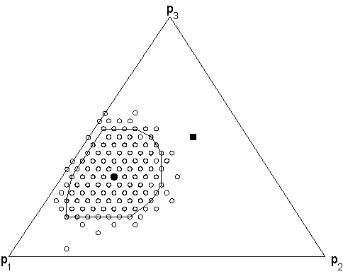

THE STATISTICAL UNCERTAINTY ASSOCIATED WITH HISTOGRAMS IN THE EARTH SCIENCES.
Pieter Vermeesch
Department of Geological and Environmental Sciences, Stanford University
Braun Hall, room 320-305, 450 Serra Mall
Stanford, CA 94305-2115, United States
pvermees@pangea.stanford.edu
Abstract
Two types of quantitative information can be distinguished in the Earth Sciences: categorical data
(e.g., mineral type, fossil name, ...) and continuous data (e.g., apparent age, strike, dip, ...). Many branches
of the Earth Sciences study populations of such data, by collecting a random sample and binning it into
a histogram. Histograms of categorical data follow multinomial distributions. All possible outcomes of a
multinomial distribution with M categories must plot on a (M-1) simplex ΔM-1, because they are subject
to a constant-sum constraint. Confidence regions for such multinomial distributions can be computed
using Bayesian statistics. The conjugate prior/posterior to the multinomial distribution is the Dirichlet
distribution. A 100(1-α)% confidence interval for the unknown multinomial population given an observed
sample histogram is a polygon on ΔM-1 containing 100(1-α)% of its Dirichlet posterior. The projection
of this polygon onto the sides of the simplex yields M confidence intervals for the M bin counts. These
confidence intervals are “simultaneous” in the sense that they form a band completely containing the
100(1-α)% most likely multinomial populations. As opposed to categorical variables, adjacent bins of
histograms containing continuous variables are not mutually independent. If this “smoothness” of the
unknown population is not taken into account, the Bayesian confidence bands described above will be
overly conservative. This problem can be solved by introducing an ad hoc prior of “smoothing weights”
w=e-sr, where r is the second derivative of the histogram and s is a “smoothing parameter”.
1 Introduction
Consider a jar filled with infinitely many balls of M different colors. Suppose that we want to estimate the
proportions of the colors in the jar by drawing a sample of N balls from it and counting the number of times each of
the colors occurs in this sample: n = {n1,n2,...nM |∑
j=1Mnj = N}. Then our best guess (the so-called “maximum
likelihood estimate”) for the M proportions is p = {p1=n1/N, p2=n2/N, ..., pM=nM/N |∑
j=1Mpj = 1}. Now we
ask ourselves the question: how confident are we about p? In other words: are there any other sets of proportions p′
= {p1′, p2′, ..., pM′ |∑
j=1Mpj′ = 1} that could have yielded the observations n with reasonable
probability?
This simple statistical problem frequently occurs in geological applications. Of course, geologists are not counting
“balls”, but things like sediment grains or faults. Neither are they interested in “color” (although sometimes
they do), but in mineral type, age or angle. In such studies, the information that is interpreted is
not represented by the measurements themselves, but by estimates of their probability distribution,
which are most often represented by some sort of histogram. When reporting analytical data, it is
considered good scientific practice to provide an estimate of the associated statistical uncertainties.
This paper presents a method to extend this practice to the kind of point-counting studies described
above. In Section 2, we will introduce a number of examples of histograms in the Earth Sciences,
as a further motivation of the present study. We will distinguish between two types of histograms.
A first type is used to represent categorical variables, such as color or mineral type. Here, we will
also discuss the ternary diagram, which is a different way of visualizing histograms with only three
bins, that is quite popular in sedimentary petrography. A second type of histogram which we will
discuss contains continuous, or time series data. The prime examples of this kind of histograms are
detrital thermochronological grain-age histograms, which tally the number of times a range of apparent
grain-ages occur in a detrital sample. However, continous histograms need not necessarily contain
age-data and we will see an alternative example for which they do not. The fundamental difference
between the aforementioned two types of histograms is that the bins of categorical histograms are
mutually independent, while adjacent bins of continous histograms are correlated to some degree.
As a consequence, the method for constructing their respective confidence bands will be somewhat
different.
After Section 2 has set the stage, we can begin developing the statistics of the actual method itself. The simultaneous confidence bands discussed in this paper will be derived according to the so-called “Bayesian” pradigm, as opposed to the more traditional “frequentist” paradigm. In Section 3, these terms will be explained using a simple binomial example, which is a degenerate case of the problem this paper addresses. So by the end of Section 3, we should be in a good shape to compute simultaneous confidence bands for multinomial proportions, which is the subject of Section 4. Section 4.1 will explain why frequentist confidence intervals do not easily generalize to histograms with more than three bins. As an alternative, a Bayesian method to construct confidence bands for categorical histograms will be developed in Section 4.2. Finally, Section 4.3 gives an ad hoc way to modify the method of the preceding section so that it takes into account the autocorrelation of continous histograms. Section 5 revisits the examples of Section 2 and answers the questions that were raised in it. Section 6 wraps up the paper with some summarizing conclusions.
2 Setting the stage: Examples of histograms in the Earth Sciences
2.1 Categorical histograms
The framework composition of sandstones contains useful information about their provenance, transport history and post-depositional evolution, and is used to reconstruct the plate-tectonic setting of sedimentary basins (e.g. Dickinson et al., 1983; Dickinson, 1985). Framework compositions are measured by petrographic point-counting of thin sections. The results are often plotted on ternary diagrams, the most popular of which is the QFL diagram, which depicts quartz, feldspar, and lithic fragments (Figure 1). As discussed in Section 1, one of the questions this paper will answer is how to estimate the statistical uncertainties for such point-counting measurements. Van der Plas and Tobi (1965) discuss the construction of confidence intervals for individual point-counting proportions, for example the percentage of quartz in a thin section. However, we are rarely interested in just a single proportion. This paper develops a Bayesian method to compute simultaneous confidence bands for categorical histograms. This method will allow an estimation of the likelihood that a specific sample falls into one particular field of tectonic affinity on the QFL plot (Figure 1). To avoid confusion, we should remark that while this paper will discuss the statistical uncertainties of individual point-counting measurements (one sample), it will not talk about the uncertainties on populations of several measurements. Whereas the former follows a multinomial distribution, the latter can take many forms, such as the logistic normal distribution. Many interesting issues are associated with ternary populations, but the reader is referred to Weltje (2002) for a discussion of them. Figure 1 shows a petrographic QFL diagram with tectonic discrimination fields by Dickinson et al. (1983). The ”cloud” of points and the associated hand-drawn contour mark a detrital population. For the discussion of how to compute this contour in a statistically more rigorous way, we again refer to Weltje (2002). The present paper will address the following questions: (1) How different are samples A and B? (2) Is it possible that samples A and B belong to the contoured population? (3) How certain are we that sample C falls into the “transitional arc” field? Could it be that it actually belongs to one of the neighboring fields? (4) How does the number of grains affect the precision of our point-counting results? Since the ternary diagram plots ratios, we lose information on the actual number of grains counted. For example, sample A represents 200 counts, while sample B represents 400 and there is no way to tell this from Figure 1.
The ternary diagram is very popular in sedimentary petrography, but when more than three components need to be plotted, we must use another device: the histogram. This is the case in heavy mineral analysis (e.g. Faupl et al., 2002), and in clast-counting, which is a scaled-up version of petrographic point-counting (e.g. Yue et al., 2001). Figure 2 shows two heavy mineral analyses by Faupl et al. (2002). For each sample, 200 grains were counted. The basic questions that arise when doing this sort of analysis are the same as for the ternary example: (1) What is the precision of the estimated mineral fractions? (2) How would the precision be affected by increasing N, the total number of grains counted? (3) Are samples ga-229/1 and io-234/1 compatible with each other? Regarding the last question, it is useful to remark that when a very large number of grains are counted, it is almost certain that a statistically significant difference between two samples of the same rock will be found. No two samples collected on the field have an exactly identical composition. As the number of counts increases, our power to resolve even the smallest differences will increase. It is when this point is reached that the petrographic composition of the sample has been properly characterized and we can begin to study populations of samples. As a comforting note, we can already tell here that the guidelines of Van der Plas and Tobi (1965) fulfill this requirement most of the time.
2.2 Continuous histograms (time series)
Alternatively, histograms can also be used for continuous data. Detrital thermochronology tries to
find the provenance area of sedimentary rocks and unravel its geologic history, by dating individual
mineral grains in the sample (e.g. Avigad et al., 2003; DeGraaff-Surpless et al., 2003). Figure 3 shows
three detrital zircon U-Pb grain-age distributions from the Methow Basin, in the southern Canadian
cordillera (DeGraaff-Surpless et al., 2003). For each sample, Figure 3 not only shows the grain-age
histogram, but also the continous “kernel density estimate”. Unlike categorical point-counting data, the
grain-ages that are used in detrital thermochronology can have significant analytical uncertainties. This is a
second source of error (the first one being counting statistics) that is not taken into account by the
histogram. The kernel density estimator is an alternative estimator of probability density that does take
into account measurement uncertainties. However, it is not easy to estimate the effect of counting
statistics on kernel density estimates. In this paper, we will ignore measurement uncertainties, and just
focus on the effect of counting statistics. We will later see that in order to get a better idea of the
importance of both factors, it is good practice to use histograms in conjuction with kernel density estimates.
The reader is referred to Silverman (1986) and Sircombe and Hazelton (2004) for a discussion of the
kernel density estimator and some issues that are associated with it. The questions this paper will
answer concerning detrital grain-age histograms are: (1) What is the uncertainty on the bin counts? (2)
How certain are we that empty bins actually correspond to missing age fractions? (3) Are grain-age
histograms such as the three shown in Figure 3 compatible with or significantly different from each
other?
It is easy to see that detrital grain-age histograms represent time series. However, continuous histograms are not restricted to the time dimension. Figure 4 shows a histogram of dip estimates for 33 reverse faults reported by Collettini and Sibson (2001). Although the units of this histogram are not time, but angle (in degrees), it still represents a continous function, or “time series”. One of the observations made by Collettini and Sibson about this histogram is that it is bimodal, with one peak at 30o and a second at 50o. The simultaneous Bayesian confidence intervals described in this paper will tell us if this bimodality is statistically significant on for example a 95% confidence level. Whereas categorical data follow multinomial distributions, where the bins are mutually independent apart from the fact that they must sum to a fixed number (the sample size), time series are auto-correlated to some degree, and this must be taken into account when computing confidence intervals. This paper will assess the importance of this problem and propose a Bayesian solution to it in the form of an ad hoc smoothing prior.
3 The definition of a confidence interval
In this section, we will introduce some fundamental statistical principles and nomenclature wich will be needed in the next section. Surprisingly enough, there is no general agreement in the statistics community on the definition of a confidence interval. There are two points of view: the frequentist and the Bayesian point of view. To explain the difference between these two paradigms, we will consider a degenerate case of the problem at hand. Revisiting the metaphor from Section 1, we now consider a jar with balls of only two colors, say black and white. Drawing N balls from this jar as before, we count the number n of black balls. For this binomial experiment, the maximum likelihood estimate for the proportion of black balls in the jar is p = n/N. How do we construct a 100(1-α)% confidence interval for this estimate? An approximate solution to this problem is given by Van der Plas and Tobi (1965), but both the frequentist and the Bayesian methods which will be discussed now are exact.
3.1 The frequentist approach
According to the “frequentist”, a confidence interval for a parameter θ “consists precisely of all those values of θ0 for
which the null hypothesis H0: θ=θ0 is accepted” (Rice, 1995). For example, we saw earlier that histograms represent
the outcome of a multinomial experiment. The probability distribution of each of the bin counts of a histogram is
the marginal of a multinomial distribution, which is the binomial distribution. Consider a bin containing n out of N
measurements. The maximum likelihood estimate for the binomial parameter p then is  mle = n∕N. Now consider
the null hypothesis H0 : p = po versus the alternative Ha : p≠po. H0 is accepted on a 100(1-α)% confidence level
iff:
mle = n∕N. Now consider
the null hypothesis H0 : p = po versus the alternative Ha : p≠po. H0 is accepted on a 100(1-α)% confidence level
iff:
|
| (1) |
Now, according to the definition, a two-sided confidence interval contains all those values for po which pass the test given by Equation 1. The solution can be found by numerical iteration and/or interpolation (Clopper and Pearson, 1934). An example for N=50, n=20 and α=0.1 is given in Figure 5.
It can be shown (e.g. Blyth, 1986), that Equation 1 is mathematically equivalent to:
|
| (2) |
Where B(α,a,b) is the 100α percentile of the β distribution with parameters a and b:
|
| (3) |
where Γ(x) is the gamma function, which can be considered the continuous version of the factorial operator. For example, if x is an integer, then Γ(x+1)=x!. Likewise, the β distribution can be thought of as being a continuous version of the binomial distribution. Notice that for n=0 and n=N, Equation 2 breaks down. Instead, the following expressions should be used:
3.2 The Bayesian approach
For a “Bayesian”, a 100(1 - α)% confidence (or credibility) interval for a parameter θ given some data x is an interval for θ that covers 100(1 - α)% of its posterior distribution P(θ|x), where the latter is given by:
|
| (6) |
with P(θ) a prior distribution on θ and P(x|θ) the likelihood function of the data given the parameter. The
subjectivity of the Bayesian approach lies in the choice of the prior distribution. A uniform distribution (“flat
prior”) is often taken if no prior information exists as to what the value of θ should be. However, whether or not this
is a good non-informative prior has been challenged. The uniform distribution does not yield posterior distributions
that are invariant under reparameterization (Jeffreys, 1946). We will soon see an example of an alternative prior
distribution that does have this invariance.
We now return to the problem of independent credibility intervals for multinomial proportions. Again, we
consider a bin with n counts out of N and want to construct a 100(1-α)% credibility interval for p=n/N. The
likelihood function is binomial: P(n|p) =  pnpN-n. If we take a flat prior for P(p), then the posterior is a
β(n + 1,N - n + 1) distribution (Bayes, 1763):
pnpN-n. If we take a flat prior for P(p), then the posterior is a
β(n + 1,N - n + 1) distribution (Bayes, 1763):
|
| (7) |
Therefore:
|
| (8) |
Notice the similarities between Equations 2 and 8. However, as opposed to the frequentist Equation 2, the Bayesian
Equation 7 does not require a special case for n=0 and n=N. The β distribution is an example of a conjugate prior.
This means that if we take a β-distributed prior, and a binomial sampling distribution, then the posterior will also
have a β distribution. The uniform distribution is a special case of the β distribution for a=b=1 (i.e. β(1,1)). β( ,
, )
is a noninformative prior (Jeffreys’ prior) for the binomial distribution that is invariant under reparameterization
(e.g. Gill, 2002, p.124). The posterior distribution then becomes β(n+,N-n+
)
is a noninformative prior (Jeffreys’ prior) for the binomial distribution that is invariant under reparameterization
(e.g. Gill, 2002, p.124). The posterior distribution then becomes β(n+,N-n+ ). Taking the same example as for
Section 3.1 (i.e. n=20, N=50, α=0.1), Figure 6 shows a two-sided Bayesian credibility interval for p.
). Taking the same example as for
Section 3.1 (i.e. n=20, N=50, α=0.1), Figure 6 shows a two-sided Bayesian credibility interval for p.
4 Simultaneous confidence intervals for multinomial proportions
As was shown in Section 3, it is relatively easy to construct independent confidence intervals for each of the M bin counts nm (1 ≤ m ≤ M) that make up a histogram, both under the frequentist and the Bayesian paradigm. However, we need to be more ambitious than that. In order to be able to compare two samples and test if they are significantly different, we would like to construct simultaneous confidence intervals for all of the M histogram bins. Like we did for the binomial case in the previous section, we will again discuss first the frequentist and then the Bayesian solution to this problem. It will soon become clear why the Bayesian method is more appropriate for our purpose.
4.1 Frequentist Confidence Regions
As discussed before, histograms are representations of multinomial distributions. Suppose we have N numbers
(“balls”), distributed over M bins (“colors”), corresponding to M multinomial proportions. The bin counts
(n1,...,nM) must fulfill the condition ∑
m=1Mnm=N. Therefore, all possible multinomial distributions must fall on
an M-simplex ΔM-1. An example of a 3-simplex (which just is another word for “ternary diagram”) is shown on
Figure 4.2. Consider a histogram with M bins, representing a sample of N numbers: XN = {x1,...,xN}.
This histogram corresponds to one point on ΔM-1, the maximum likelihood estimate (mle) of the bin
counts. Under the frequentist paradigm, outlined in Section 3.1, a 100(1-α)% confidence region on
ΔM-1 consists of all those probability vectors p = (p1,...,pM | ∑
m=1Mpm = 1) which are capable of
yielding observations as extreme as n = (n1,...,nM | ∑
m=1Mnm = N) with at least 100(1-α)%
probability.
In order to find this region, a grid of possible pkl = (p1kl,...,pMkl | ∑
m=1Mpmkl = 1) is evaluated. For each
of these “test-populations” (for example the black dot on Figure 4.1) a large number of synthetic
“samples” (the white dots on Figure 4.1) of N numbers were generated, following an algorithm given in
Appendix A. Next, we construct the 100α% convex hull of these synthetic samples. This is a polygon
containing 100α% (the so-called “hull percentile”) of them. We test to see if pmle (the black square on
Figure 4.1) falls within the convex hull of pkl. If this is not the case, then pkl falls outside the 100α%
confidence region of pmle. This procedure is repeated for the entire grid (k=1...K , l=1...L). On Figure
4.1, the contour line contains all those grid points for which the mle falls within their 95 percentile
hull.
Figures 4.1 and 4.1 just serve as an illustration of the frequentist paradigm on Δ2. A more efficient way to compute approximate frequentist confidence regions on the ternary diagram is described by Weltje (2002, p.246). Projecting the frequentist confidence region onto the axes of the simplex would not represent that region, but the smallest polygon circumscribing it. Therefore, it is not possible to accurately “translate” a frequentist contour plot to error bars on a histogram, which makes it impossible to easily visualize the frequentist uncertainties of histograms with more than three bins. The Bayesian credibility regions discussed next solve this problem.

4.2 Bayesian Credibility Regions
It is relatively easy to generalize the methodology outlined in Section 3.2 from a binomial to a multinomial situation. Recall that the conjugate prior to a binomial distribution is the β-distribution. The conjugate prior to a multinomial distribution is the Dirichlet distribution:
|
| (9) |
The multinomial uniform distribution is a special case of the Dirichlet distribution with all ai=1. If n is a vector
of M bin counts, then the posterior distribution under such a flat prior is Dn+1(p1,...,pM). The choice of a prior that
is truely non-informative and invariant under reparameterization is more controversial for the Dirichlet than it was
for the β distribution. Jeffreys suggested taking ai=1/2, while Perks recommended using ai=1/M (∀ i=1...M)
(Good, 1965). Similar to the binomial case (Section 3.2), simultaneous Bayesian credibility bands for the
multinomial distribution are intervals that cover 100(1-α)% of the area under the posterior distribution. A few
examples of Dirichlet posteriors are shown on Figure 10. As opposed to the β distribution, there are no tables
of the percentiles of the Dirichlet distribution. In order to integrate this multi-dimensional function
ourselves, we have to numerically sample from it, as described by Devroye (1986) and in Appendix
B.
Thus, a collection of B “sample histograms” can be constructed, representing B samples from the posterior
Dirichlet distribution (Figure 11). All these histograms correspond to points on ΔM-1. Asymptotically, independent
100(α∕2) and 100(1 - α∕2) percentiles for the replicates of each of the histogram bin counts will converge to the
independent credibility intervals of Equation 8. However, it is also possible to obtain simultaneous credibility bands.
The Bayesian way of doing this is to find M credibility intervals that define a polygon on ΔM-1 containing
100(1-α)% of the posterior distribution (Figures 4.2 and 11). The algorithm for finding this polygon is given in
Appendix B. Figures 4.2 and 13 show the effect of different priors on the posterior distribution and its corresponding
credibility polygon.
This Bayesian method yields non-zero credibility intervals, even for empty bins. It works for histograms but not for kernel density estimates, which are continuous functions that cannot be easily represented on a simplex. As histograms traditionally do not take into account measurement uncertainties, the Bayesian credibility bands only reflect the uncertainties induced by the counting statistics, and not those caused by analytical imprecision. A final remark to be made is that, strictly speaking, the way we have defined simultaneous Bayesian credibility regions is only exact for categorical histograms, such as those obtained by point-counting mineral assemblages. However, if the histogram represents a time series, which is the case in detrital thermochronology, it will have some smoothness to it. This effect will not be captured by the Bayesian credibility regions discussed before. The categorical Bayesian credibility bands can be overly conservative if applied to such autocorrelated data. The next section of the paper discusses this issue.
 ,
, , was used.
, was used.
4.3 Bayesian credibility bands for smooth histograms
Strictly speaking, Bayesian credibility bands are only applicable to non-smooth or categorical data (Section 4.2). In this section, we will discuss the importance of this problem and a way to solve it. We can express the roughness r of a time series g(t) as a function f of its second derivative:
|
| (10) |
For example, for the discrete case of a histogram with three bins n=(n1,n2,n3), we could write:
|
| (11) |
We now define the smoothness weight w as:
|
| (12) |
where s is the smoothing parameter. Figure 14 shows the trinomial smoothing weights for different values of s (for fixed N=n1+n2+n3). The distribution of the weights can be used to filter the posterior distribution, thereby in effect serving as a prior distribution (a “smoothing prior”). The algorithmic details for this procedure are given in Appendix C.

Figure 15 shows the results of this kind of posterior filtering for a trinomial distribution on Δ2. A logical extension of this method from three to M bins would be to replace Equation 11 by:
|
| (13) |
By generating samples from the posterior distribution, and accepting or rejecting them based on the smoothing
weights given by Equations 12 and 13, B samples from the smoothed posterior could be obtained. However, the
amount of computation time that would be required for this process increases exponentially with M. The “sliding
window” approach explained next does a similar job in linear time. The roughness penalty embodied by
Equation 12 depends on the second derivative only. This means that we only consider the influence of
immediately adjacent bins on each other. For example, the mth bin is directly correlated with the (m-1)th
bin and the (m+1)th bin, but not with the (m-2)th bin and the (m+2)th bin. This warrants the use
of a three bin wide “sliding window”, that recursively smooths the posterior distribution from the
left to the right (or vice versa) one bin at a time. The details of this method are given in Appendix
C.
Figures 16 and 17 illustrate the results of the sliding window procedure on a synthetic dataset. These figures demonstrate how using a smoothing prior filters out the roughest “spikes” from the posterior sample set. It is such often small minority of outliers that makes the unsmoothed, categorical confidence bands of Section 4.3 too wide, meaning too conservative, for continuous histograms. An example of the sliding window approach on real data is deferred to Section 5.2, where we will also discuss which values for the smoothing parameter s to choose, and why the rather ad hoc nature of the smoothing method discussed in this section is probably not a big issue after all.
5 Case studies
5.1 Categorical histograms
We first return to the example previously discussed in Section 2.1 and illustrated by Figure 1. Figure 18 shows the
simultaneous 95% Bayesian credibility regions for samples A-D on the ternary QFL diagram in their now familiar
polygonal form. The difference between the credibility regions of samples A and B clearly stands out. Recall that
400 points were counted for sample B, as opposed to only 200 for sample A. As a result, the uncertainty polygon of
A is substantially larger than that of B. It is quite possible that A and B were sampled from the same distribution.
Whereas it very unlikely that sample B could have been derived from the population outlined by the contour,
this conclusion cannot be made for sample A. A similar situation exists for sample C. This sample
plots into the “transitional arc” field of the QFL diagram, but its 95% uncertainty region partly falls
inside the “undissected arc” and “recycled orogen” fields. Although we have not done so, it would even
be possible to compute the respective probabilities for the three fields, by counting the number of
numerical Bayesian replicates that fall into them. Finally, sample D contains only one percent (4/400)
of quartz. Its uncertainty hexagon is highly asymmetric but falls entirely inside the simplex, as it
should.
We now proceed to the multinomial example of heavy mineral analyses by Faupl et al. (2002). Figure 19 shows the 95% credibility intervals for the eight heavy mineral proportions, using Jeffreys’ prior. When 200 grains are counted, the percentage-error is between 2 (staurolite in ga-229/1) and 20% (garnet in io-234/1) (Figure 19.a). There is less than 5% probability that the heavy mineral distribution of sample io-234/1 is compatible with that of sample ga-229/1 because the observed apatite and garnet fractions of io-234/1 fall outside the simultaneous 95% credibility band of ga-229/1. Likewise, it is less than 5% likely that sample ga-229/1 is compatible with io-234/1 because the apatite and garnet fractions of the former fall outside the confidence bands of the latter. The statement that ga-229/1 and io-234/1 are mutually compatible is true with less than 2.5%, and not 5% probability, because it involves two simultaneous tests. This is a consequence of the so-called Bonferroni inequality (Rice, 1995). The Bonferroni rule is on the conservative side, especially considering the fact that the two tests are not entirely independent from each other. Figure 19.b shows that if the percentages reported by Faupl et al. had been the result of counting 1000 instead of 200 grains, the percentage-errors would have been between 0.5 and 9%.
5.2 Continuous histograms
We first consider a dataset of 157 concordant U-Pb SHRIMP ages on detrital zircon from the Cambrian Nubian
Sandstone of southern Israel (Avigad et al., 2003). The vast majority of these grains are of Pan-African age
(900-540Ma), and likely derived from the Arabian-Nubian shield but there are some older grains as
well, which could have come from as far as Central Africa (Avigad et al., 2003). Figure 5.2 shows
the kernel density plot of this dataset and its grain-age histogram with 95% credibility band. This
plot contains an optimal amount of information: the kernel density estimate shows the sample taking
into account measurement uncertainties, while the histogram represents the estimated population and
the uncertainties caused by counting statistics. The credibility band also allows a better assessment
of the likelihood that empty bins actually correspond to missing age-fractions, and of the statistical
significance of some of the minor pre Pan-African peaks. The Nubian Sandstone example does not
follow a very smooth distribution. Therefore, it might not be necessary to apply any smoothing to it at
all.
This is certainly not the case for another dataset, containing the ages of 155 lunar spherules, dated with the
40Ar/39Ar method, and published by Culler et al. (2000). Figure 21.a shows the simultaneous 95% credibility band
of this age-histogram without smoothing (s=0), whereas for Figure 21.b, a smoothing prior with s=0.25
was used. The resulting credibility band is significantly narrower. To study the effect of the smooting
parameter s on the credibility band, the experiment of Figure 21 was repeated for a range of s-values and
the average width of the credibility band was calculated for each of them. Figure 5.2 shows how a
moderate amount of smoothing can reduce the width of the credibility band by a factor of two, but that
smoothing even more does not have much effect. This is because the exaggerated width of the unsmoothed
credibility bands is mostly caused by just a few anomalous spikes (see Figure 16.a). The sharpest of these
excursions have the greatest effect on the width of the credibility bands, and will be filtered out the easiest.
Smoothing out posterior samples that are less rough takes a lot more effort while having a much smaller
effect. The fact that the magnitude of the smoothing parameter is not all that important reassures us
that the rather arbitrary nature of the smooting prior as defined by Equations 10 and 12 is not a
problem.
DeGraaff-Surpless et al. (2003) presented a statistical analysis of the detrital U-Pb zircon age datasets shown in
Figure 3. Using the Kolmogorov-Smirnov (K-S) test, they compared the different samples to see if they could have
been derived from the same population. The conclusion was that samples KD3 and KD7 were compatible with each
other on the 95% confidence level, but that sample KD26 was not. The same test can be done using Bayesian
credibility bands, as shown on Figure 23. No smoothing prior was used for the construction of Figure 23 because it
is not our goal to constrain the distribution of the underlying population, but only to see if the different
observations are compatible with each other. As soon as any part of one histogram falls outside the 95%
credibility band of the other, the former is not compatible with the latter. However, as discussed in
the previous section, in order to test if two samples are mutually compatible, we must construct two
97.5% credibility bands. If each of the two histograms completely falls inside the 97.5% credibility band
of the other, there is at least 5% chance that they are compatible with each other. In addition to
the K-S test and the Bayesian credibility bands, the χ2-test is a third statistical method that was
used to test the compatibility of the three samples. Its results are also shown on Figure 23. The three
methods yield the same conclusions: samples KD3 and KD7 are compatible with each other, while
KD26 is not. As a word of caution, we should repeat the remark made in Section 2.1. Provided the
number of measurements is large enough, eventually any test will fail, no matter how small the difference
between the distributions. Instead of blindly looking whether or not a test has failed, it is better to
consider the relative variation of the p-values, ensuring that samples of roughly the same size are
compared, or to use a different measure of “distance” between distributions (e.g. Sircombe and Hazelton,
2004).
Finally, we return to the histogram of dip angles of 33 reverse faults from Collettini and Sibson (2001). Figure 24 shows the simultaneous 95% credibility band for this histogram. For Figure 24.a, no smoothing prior was used (s=0), while for Figure 24.b, the smooting parameter was s=1. In either case, it is easy to find a monomodal histogram that integrates to 33, while completely fitting within the credibility band. This means that the apparent bimodality is not statistically significant on a 95% confidence level. Since the author is not a structural geologist, he cannot assess if such bimodality is an expected feature. If so, a bimodal prior distribution could be used instead of a uniform one. In that case, it is possible that the bimodality is statistically significant. However, without such prior information, it is not.
6 Conclusions
In the Earth Sciences, it is often not the data itself, but an estimate of its probability distribution (density) that is
interpreted. This paper addressed the problem of how to quantify the statistical uncertainty on such interpretations.
The histogram is one of the most convenient ways to represent data like petrographic point-counts. We showed how
to construct simultaneous Bayesian credibility bands for such categorical histograms. When only three categorical
variables are studied, the ternary diagram is an alternative method of visualization, to which the method developed
in this paper is equally applicable. Credibility bands allow an assessment of the precision of point-counting results
and a way to intercompare multiple samples. Histograms can also be used to estimate probability densities of
continous variables, such as radiometric ages in detrital thermochronology. The main alternative to the histogram
for this purpose is the kernel density estimator. The advantages of the latter to the former are that (1) kernel
density estimates yield continuous, rather than stepwise functions and (2) they explicitly take into
account measurement uncertainties, whereas histograms do not. On the other hand, histograms have the
substantial advantage that it is possible to compute confidence bands for them, as described in this paper.
This is far less obvious for kernel density estimates. When analytical uncertainties exist, it is good
practice to use kernel density estimates in conjunction with histograms, including their credibility
bands.
Credibility bands provide a measure of the influence of counting statistics on density estimates. They also allow a
better judgement of the possible similarities between different populations. If measurement uncertainties are
small, the histogram is a good estimator of probability density, for which exact Bayesian credibility
bands can be calculated. These have non-zero width even over intervals that were not sampled. This is
important in disciplines such as detrital thermochronology, where not just the presence, but also the
absence of certain (age) components is important. The degree of confidence that certain age intervals
are absent in a detrital population can be calculated analytically (Vermeesch, 2004). For example, if
100 sediment grains are counted, there is up to 11% chance that at least one fraction ≥ 0.05 of the
population was missed by that sample. (Bayesian) credibility bands such as those on Figure 5.2 are an
alternative way to express this kind of uncertainty. Continuous histograms often represent time series,
which are autocorrelated to some degree. In such cases, adjacent bins are not independent from each
other, as was the case for categorical histograms. The Bayesian way to deal with this problem is to
use an ad hoc smoothing prior, which can be completely determined by a single smooting parameter.
Smoothing helps to better constrain the probability distribution that underlies the data. Smooting is
not necessary if we merely want to see which other experimental outcomes are compatible with the
observations.
This paper comes with a computer program named EPDU (an Estimator of Probability Density and its Uncertainties) that runs on both PC and Macintosh computers. This program is available online at http://pangea.stanford.edu/research/noble/epdu.
Appendix A
To generate a large number B of synthetic samples from a multinomial distribution p = (p1,...,pM | ∑ m=1Mpm = 1), we use a “bars and stars” procedure:
- Generate the following vector of M+1 numbers: = . This represents the edges (“bars”) of a histogram. The gaps between subsequent entries in this array represent the multinomial probabilities (p1,...,pM).
- Create a matrix of size B×N with random numbers between 0 and 1, drawn from a uniform distribution. This represents B synthetic samples of N values (“stars”).
- For each row of , count the number of “stars” that fall in between the “bars” of . This procedure yields a matrix of size B×M with multinomial replications of p.
Appendix B
The following procedure produces a random sample from a Dirichlet distribution Da: generate a vector x =
(x1,...,xm,...,xM) by drawing each of the xms from a gamma distribution with shape parameter am. Then Θ =
(θ1,...,θm,...,θM) with θm=xm/∑
m=1Mxm has the desired Dirichlet distribution (Devroye, 1986). Alternatively, it is
also possible to obtain a sample of the posterior distribution using a procedure named the Bayesian bootstrap
(Rubin, 1981).
To numerically integrate the Dirichlet distribution, we use either the “traditional method” of Devroye (1986), or the Bayesian bootstrap. Both methods give the same results. Thus, we generate a B×M matrix containing B random samples from the Dirichlet posterior of interest, each representing a histogram of M bins. The following procedure finds a polygon on ΔM-1, containing 100(1-α)% of the posterior distribution:
- construct a two-sided 100(1-γ)% credibility interval for each of the columns (“bins”) of this matrix. This can be done either analytically with Equation 8, or numerically by computing the 100(α/2) and 100(1-α/2) percentiles. This yields M independent credibility intervals.
- For each column, accept those values (rows) that fall within its respective credibility interval and reject those rows that fall outside of it. Divide the number of rejected rows by B (the total number of rows), and call this fraction ρ. If δ = ρ-α > 0, repeat step #1 for a larger γ. If δ < 0, repeat it for a smaller γ.
- Stop the iteration if δ is small enough (e.g., <0.001). The independent 100(1-γ)% credibility intervals for each of the bins then correspond to simultaneous 100(1-α)% credibility bands for the entire histogram.
Appendix C
First, we will explain how to smooth a Dirichlet posterior on Δ2:
- Generate a random Bayesian replicate nb=(n1b,n2b,n3b) from the unsmoothed Dirichlet posterior as in Devroye [1986] or Appendix B.
- Calculate the roughness r of this sample with Equation 11 and the smoothness weight w with Equation 12. The latter is a number between zero (infinite roughness) and one (zero roughness).
- Generate a random number between zero and one. If this number is greater than w, reject nb. If it is less than w, accept nb.
- Repeat steps 1-3 for b=1...B until a large number B (e.g., 500) of samples from the posterior distribution
have been accepted.
Next, we describe the method for extending this method to histograms of more than three bins, using a “sliding
window” approach. Figure 25.a shows B Bayesian replicates from an unsmoothed posterior distribution. On this
figure, the dashed line shows the observed bin counts n = (n1,...,nM) in the form of a frequency polygon (Scott,
1992). The solid lines show B multinomial replicates from the Dirichlet posterior: nb = (n1b,...,nMb), with 1≤b≤B.
In this example B=7, but in real applications a more typical value would be B>500. Assume that the first m-1
bins have already been smoothed (Figure 25.b). Figures 25.c and d then show how to find the bth
replicate for the next bin. We generate an array nb = (n1b,...,nMb), where (n1b,...,nm-1b) are “inherited”
from the previous smoothing steps and (nmb,...,nMb) are generated at random from M-m+1 gamma
distributions with parameters (nm,...,nM) respectively. Dividing nb by ∑
j=1Mnjb yields a sample pb from the
Dirichlet posterior (∑
j=1Mpjb=1) [Devroye, 1986]. Multiplying pb by N=∑
j=1Mnj gives a Bayesian
replication of the original histogram n. We now only consider one “trinomial frame” of this Bayesian
replicate (nm-1b,nmb,nm+1b) and calculate its roughness and the corresponding smoothness weight
with Equation 12. Using the same decision rule as before, we either accept or reject the mth bin. Two
examples of such “multinomial extensions” to the bth Bayesian replicate are shown on Figure 25.c,
labeled I and II. The latter candidate will have a much greater chance of being accepted than the
former.
After repeating this procedure B times, we obtain a set of B multinomial extensions to the previously smoothed
set of samples from the Dirichlet posterior (Figure 25.e). We discard the replicates from the (m+1)th
bin onward and just keep the values for the mth bin. The procedure then recursively smooths the
remaining bins one by one, in exactly the same way as described before. However, at the (M-1)th
frame, we have to accept not only the (m-1)th, but also the mth bin, in order to end the recursive
process. Likewise, to start the recursive process, we must accept both the first and the second bin
of the first trinomial “frame” during the first step of the smoothing procedure. To avoid any edge
effects, we “pad” the vector n of observed bin counts with zeros. This is more than just a trick, because
it is an explicit assumption of the histogram that the number of observations outside its support is
zero.
At the end of the smoothing procedure, the set of posterior samples looks like Figure 25.f. The smoothed replicates are “more parallel” than the unsmoothed ones shown in Figure 25.a. Thus, it becomes clear why the width of the smoothed credibility band is smaller than that of its unsmoothed counterpart, as illustrated by an example of the stepwise smoothing procedure on synthetic data shown in Figures 16 and 17.

Acknowledgements
The author wishes to thank Albert Tarantola and especially Susan Holmes for introducing him to Bayesian statistics. However, these people are not responsible for any inaccuracies or errors that may exist in the paper.
References.
- Avigad, D., Kolodner, K., McWilliams, M., Persing, H., and Weissbrod, T., 2003, Provenance of northern Gondwana Cambrian sandstone revealed by detrital zircon SHRIMP dating.: Geology, v. 31, no. 3, p. 227-230.
- Bayes, F. R. S., 1763, An essay towards solving a problem in the doctrine of chances: Philosophical Transactions, v. 53, p. 370-418.
- Blyth, C. R., 1986, Approximate binomial confidence limits: Journal of the American Statistical Association, v. 81, no. 395, p. 843-855.
- Clopper, C. J., and Pearson, E. S., 1934, The use of confidence or fiducial limits illustrated in the case of the binomial: Biometrika, v. 26, no. 4, p. 404-413.
- Collettini, C., and Sibson, R. H., 2001, Normal faults, normal friction?: Geology, v. 29, no. 10, p. 927-930.
- Culler, T. S., Becker, T. A., Muller, R. A., and Renne, P. R., 2000, Lunar impact history from 40Ar/39Ar dating of glass spherules: Science, v. 287, no. 5459, p. 1785-1788.
- DeGraaff-Surpless, K., Mahoney, J. B., Wooden, J. L., and McWilliams, M. O., 2003, Lithofacies control in detrital zircon provenance studies; insights from the Cretaceous Methow Basin, southern Canadian Cordillera: Geological Society of America Bulletin, v. 115, no. 8, p. 899-915.
- Devroye, L., 1986, Non-uniform random variate generation: New York, Springer-Verlag, 843 p.
- Dickinson, W. R., Beard, L. S., Brakenridge, G. R., Erjavec, J. L., Ferguson, R. C., Inman, K. F., Knepp, R. A., Lindberg, F. A., and Ryberg, P. T., 1983, Provenance of North American Phanerozoic sandstones in relation to tectonic setting: Geological Society of America Bulletin, v. 94, no. 2, p. 222-235.
- Dickinson, W. R., 1985, Interpreting provenance relations from detrital modes of sandstones, in: Zuffa, G.G. (Ed.), Provenance of Arenites, ed., NATO ASI Series, Series C: Mathematical and Physical Sciences: Reidel, Dordrecht, v. 148, p. 333-361.
- Faupl, P., Pavlopoulos, A., and Migiros, G., 2002, Provenance of the Peloponnese (Greece) flysch based on heavy minerals: Geological Magazine, v. 139, no. 5, p. 513-524.
- Gill, J., 2002, Bayesian methods : a social and behavioral sciences approach: Boca Raton, FL, Chapman and Hall, 459 p.
- Good, J. I., 1965, The estimation of probabilities: an essay on modern Bayesian methods: Cambridge, Massachusetts, MIT Press, 109 p.
- Jeffreys, H., 1946, An invariant form for the prior probability in estimation problems: Proceedings of the Royal Society of London A, v. 186, no. 1007, p. 453-461.
- Rice, J. A., 1995, Mathematical statistics and data analysis: Belmont, CA, Duxbury Press, 602p.
- Rubin, D. B., 1981, The Bayesian Bootstrap: Annals of Statistics, v. 9, no. 1, p. 130-134.
- Scott, D. W., 1992, Multivariate density estimation: theory, practice, and visualization, Wiley series in probability and mathematical statistics: New York, Wiley, 317 p.
- Silverman, B. W., 1986, Density estimation for statistics and data analysis, Monographs on statistics and applied probability: London ; New York, Chapman and Hall, 175 p.
- Sircombe, K. N., and Hazelton, M. L., 2004, Comparison of detrital age distributions by kernel functional estimation: Sedimentary Geology, v. 171, p. 91-111.
- Van der Plas, L., and Tobi, A. C., 1965, A chart for judging the reliability of point counting results: American Journal of Science, v. 263, no. 1, p. 87-90.
- Vermeesch, P., 2004, How many grains are needed for a provenance study? Earth and Planetary Science Letters, v. 224, no. 3-4, p. 441-451.
- Weltje, G. J., 2002, Quantitative analysis of detrital modes; statistically rigorous confidence regions in ternary diagrams and their use in sedimentary petrology: Earth-Science Reviews, v. 57, no. 3-4, p. 211-253.
- Yue, Y., Ritts, B. D., and Graham, S. A., 2001, Initiation and long-term slip history of the Altyn Tagh Fault: International Geology Review, v. 43, no. 12, p. 1087-1093.